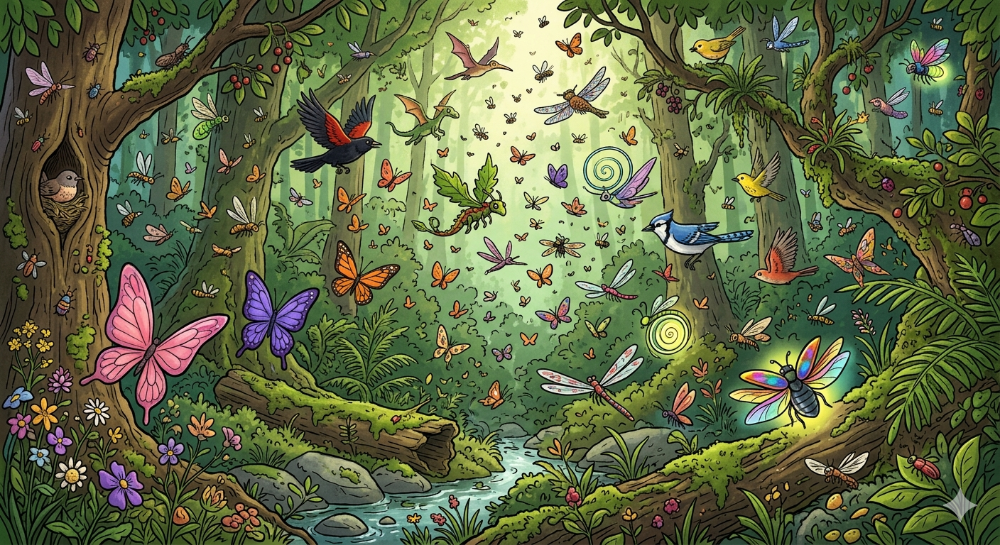
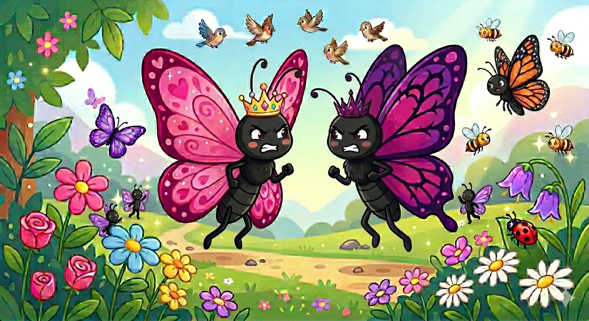
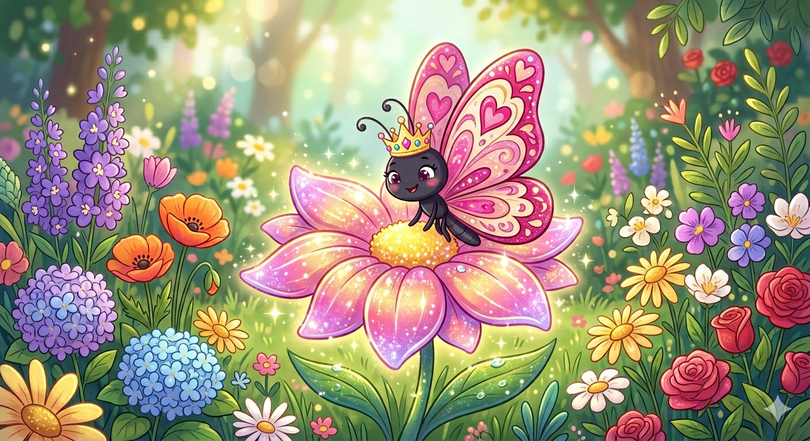
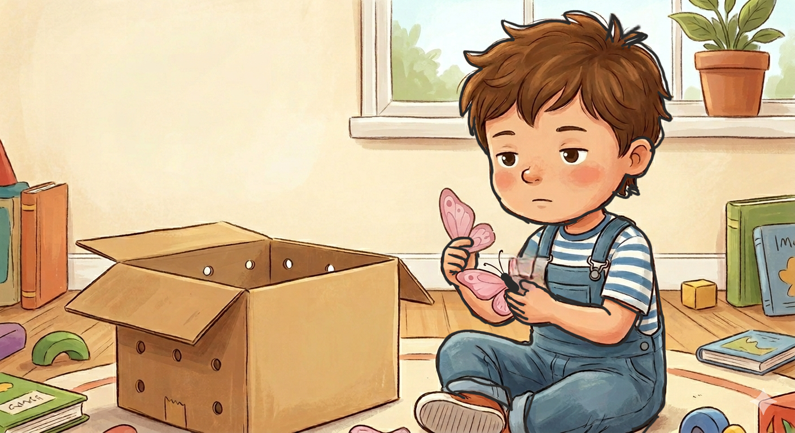

J.J Stories
J.J Stories
Author of story:JaiannahJones
Illustrated By: NicelinJones
Corrected by:Monica ansalam
These are moral stories from J.J stories. We kindly encourage you all to collect every books from series of J.J stories.

In a nice day, In the deep forest there was a place called The Land Of Flyers, It was named because this place was filled with every creature that flies and people come and visit this place often just to see the beautiful creatures but people mostly line up to see the butterflies because there were some rare colored butterflies

In this same land there was a butterfly princess and her name was princess Pinkell, She had beautiful pink wings. But there was one problem, Princess Pinkell was filled with pride and she was very erogant. Princess Pinkell has three siblings they are Violet,BlueBerry,Oura and whenever princess Pinkell sees princess Violet she says "Hey Violet, I am the most beautiful here and in the whole flyers land and people only line up to see me, I am way better than you" Then princess Violet replied "Pinkell, I am also the same amount of rareness as you and there are also many people lining up to see me as well" "well, I am still better than you Violet because most of them line up to see me while only a few come to see you, I find it hard to believe that you are my sister". And this happens every day, There wasn't a good relationship between the sisters and Pinkell didn't only bully her sisters but also the other butterflies, She said, "Every beautiful flower here is mine because i am the most beautiful and rare and I am also the Princess So i deserve it". And because of this, Everyone in the flyers land hated Princess Pinkell.

One evening Princess Pinkell saw a beautiful shining flower and as always she wanted it so she went to the flower when suddenly some one trapped her in a box and it was not too long till she realized it was the hunters and the hunters were saying that ,"The pink butterflies are one of the rare butterflies and do you have any idea that how much would people be eager to buy this butterfly , Probably more than eight hundred dollers!". Then hunter2 replied,"Yes sir, Its one of a life time fortune". And when Pinkell heard this she was so scared when suddenly she saw Violet at the top, So she shouted ,"Violet! Help, Call the birds to chase away the hunters". But Princess Violet laughed and said that, "Hey Pinkell, Do you really think any one would want to save you?, All you have done was showing of your pride and being rude and arogant to everyone so there is no point asking and have fun with the hunters, Well i don't know about you but there is definitely a party tommorrow". And Violet just left her sister with the hunters.

Eventually the hunter sold Pinkell the butterfly to a little boy and the little boy wanted to switch Pinkell in to another box but when he was trying to take Pinkell out he accidently tore one of the wings of Pinkell and Pinkell died but the boy didn't care because it was just a butterfly so he threw it out. While on the other hand, Violet shouted and said, "Every one Pinkell is finelly gone, we don't need to keep up with her pride and arogance". And Everyone was so happy, No one really seemed to care about Pinkell.
Never be proud or erogant because there is nothing there for you to be proud of because with out God you would be nothing therefore give glory to God not to ypurself as pride and erogance has a consequence.